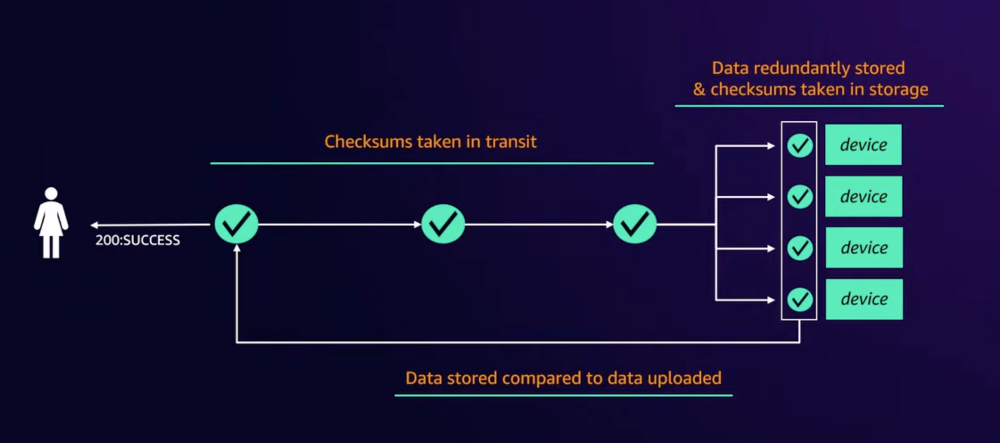
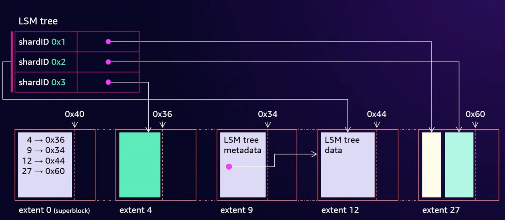
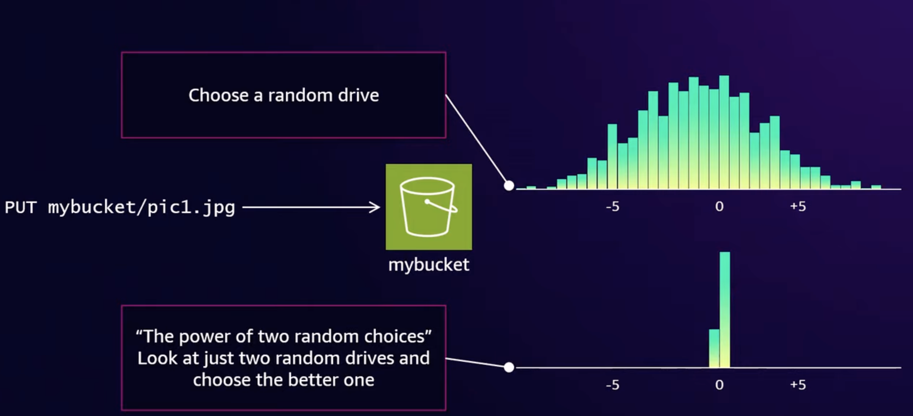
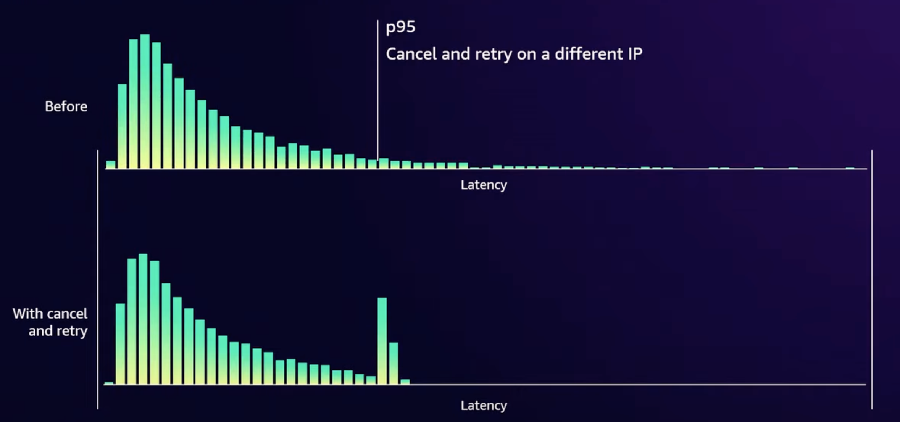

Seth Markle : Senior Principal Engineer ; working on S3 for the last 15 years, worked on object indexing, disk fleet, frontend systems, S3 metadata systems
James Bornholt : Principal Engineer at S3 ; worked on disk fleet, S3 Tables & connectors like mountpoint, pytorch
Most talks on scale focus on how to tolerate getting larger . This talk focuses on how the system improves because it’s larger.
Stats on AWS S3 at scale
- Over 400 trillion objects
- Over a quadrillion requests per year
- Over 200 billion events daily
- Over 1 PB/s transferred at peak
Physics of Data
- S3 has tens of millions of drives and they run really hot in terms of their workload.
- A drive can only absorb a limited amount of work.
- If traffic can’t be spread across those 10s of millions of drives, then it limits what our customer can do even though we’ve the capacity on hand to serve that traffic.
- Some patterns emerge at scale.
- Actors in the system: Customer, Hardware, Software
The hardware, HDDs
Mechanical components with 2 primary movements required to read data: spinning platters, actuators (with read/write head).
When you read data, you provide an address (called a Logical Block Address or LBA) which is just an offset from 0 to the capacity of the drive. The actuator swings back and forth to move into location. Once it’s on the right track, it needs to wait for the data to come around if it’s not directly underneath it (half a rotation on average).
Factors that cause drives to take time when you’re reading data
- Seek time: Seeking is the act of actuator moving. Time for that to happen is called seek time.
- Rotational latency: Time spent waiting for rotation is called rotational latency.
See https://animagraffs.com/hard-disk-drive

The software, Replication

- When you store an object in S3, it’s broken apart into pieces called shards.
- Shards are stored redundantly across the disk fleet using erasure coding.
- The drives run use a filesystem software called ShardStore. ShardStore is a log structured file system.

- Writes becomes more efficient since the actuator doesn’t have to move back and forth.
- Reads require random IO since the customer can request any data.
Individual workloads
- Storage workloads tend to be bursty (idle for a long time and then suddenly demanding)
- Customer Example: FINRA
- Regulates securities market. Collect, process, analyzes all txns. across equity and option markets.
- Involves ingesting 100s of billions of records each day.
- In August ‘24, they had a peak day w/ 906 billion records processed two days in a row.
- On average, they process 30TB of data everyday.
- They’ve a strict 4 hour SLA for processing this data.
- Rest of the time they ingest records but bulk processing happens in a short window only.
- Another example: How many drives would an example workload need to operate?
- Workload: Hold 1PB of data, 1MB per object, Process the data in a 1hr
- i.e. Access Rate: 275GB/s at peak; ~ 1 billion objects
- Physics of data
- Rotation = 4ms, average (7200 RPM drive i.e. 8ms per rotation and half a rotation on avg.)
- Seek = 4ms, average (move half the radius on the platter on avg.)
- Say, 1MB objects are chunked into 0.5MB shards.
- 0.5MB transfer = 2ms, average
- Total = 10ms per read (rotation + seek + transfer)
- i.e. 50MB/s at 0.5MB per read
- For just storing 1PB of data they’d need 50 drives at 20TB per drive
- To access the data at 275GB/s, they’d need 5500 drives at 50MB/s
- 100x difference to support bursts
- System is idle the rest of the time
While individual workloads are bursty, aggregated de-correlated workloads aren’t. When the workloads are layered together, they become more predictable at S3’s scale. There are some patterns though like younger data is “hotter” data, small objects are accessed more frequently.
Shards for a customer can thus be spread across a large number of disks than their storage would typically require and get the additional throughput.
Peaks for some workloads map to valleys for others.
Thermodynamics : Balancing the aggregates
- While aggregate workloads are predictable, you still need to pay attention to how traffic distributes across the fleet to prevent hot & cold spots across the disk. Doesn’t happen automatically.
- Objects follow some predictable patterns in aggregate (eg. younger data is hotter data) but over time drives “cools off” as it gets older.
- Deletes might poke some holes and make some data on the old drive “hot” but not nearly as much as the new drives.
- Uncorrected, the system tends towards “coldness”.
- At S3’s scale, they’ve storage racks of every traffic profile in the system. There’s a really large surface area for rebalancing & re-encoding when they get things wrong. They constantly move data around to balance storage temperatures across racks and hard drives.
- One useful opportunity for them to do rebalancing is when they get a new storage rack.
- They weight 1000s of pounds.
- Called “JBODs” (just a bunch of disks).
- 20TB / disk. Racks have physical capacity of 20PB.
- Can’t start sending all traffic to the new drives because it’d overwhelm those drives.
- So, new racks are brought online & filled ~80% w/ existing cooler S3 data.
- This frees up capacity in aggregate across pre-existing spindles & thus there’s a lot of space on old spindles for hot data to land & not just in the new spindles.
Designing de-correlated systems
- Every part of S3 is designed to de-correlate workloads.
- Eg: If you’ve 2 customers running workloads then those 2 workloads should be de-correlated from each other. And even a single customer, your workloads should be de-correlated from itself.
Assigning buckets to their storage
A straw-man approach: You assign a hard drive to a bucket and you keep putting objects in the same drive until its full. You then assign another drive and so on.
- Advantage: Simple & easy to operate and reason about.
- Issues
- Hard drives fail so data needs to be stored on multiple drives.
- Not cost-efficient to assign an entire drive esp. for a small customer.
- A small customer is going to share the drive w/ other customers & many workloads will hit the same drive.
- For large customers, performance is constrained by their storage footprint.
Shuffle sharding
- Workloads are randomly spread across the fleet, across the drives. Even for a PUT to the same bucket or the same key.
- Not constrained by static resources i.e. if you’ve 1PB of data, you can be spread across more than 1PB worth of drives.
- A small customer is insulated against the “noisy neighbor” problem. If an object from another customer is “hot”, you won’t be affected by it even if you share some drives since there are other drives where you can get that data.
- Shuffle sharding is also used for DNS resolution of S3 buckets so that your requests are spread across multiple (front-end) hosts.
- Placing data for shuffle sharding
- Can’t look at every drive and figure out the optimal set of drives for every PUT operation because S3 uses 10s of millions of drives & gets millions of RPS.
- Completely randomly leads to a bell curve distribution in a graph for capacity usage over time. Over a long time, some drives end up being 10-20% less full than other drives. Wasted capacity.
- The power of two random choices: Pick 2 drives totally at random & figure out which one is least used and use that drive.

Sidenote: Shuffle sharding is also used in AWS Common runtime (CRT) which is a low-level library for working with S3 and implements retries, parallelization of requests etc. to get high throughput for S3. It’s not used by most customers directly and is included in SDKs.
To improve performance when you talk to S3, the CRT keeps a live estimate of the tail latency of the requests you’re making. CRT intentionally cancels & retries requests that go past a certain threshold (say p95).It’s very likely that the new request will go to a different front-end host & different drive & the retry will be fast.

Engineering for failure is engineering for velocity
- At scale, knowing that a system has failed is surprisingly hard.
- All bytes stored are constantly scanned to check for integrity.
- There are alarms on p100 longest time, the most time a byte has gone w/o being scanned.
- Erasure coding for fault tolerance
- Replication is a simple way to tolerate faults - both individual drives and entire AZs but comes w/ high overhead.
- Erasure coding splits an object into K shards & creates extra parity shards. The object can be rebuilt from any K of the shards.
- Eg: Object is split into 5 shards, 4 extra parity shards are added. These 9 shards can be distributed across 3 AZs. Even if an entire AZ goes done, the original data can still be recovered from any 5 shards.
- Compared to replication where the overhead would be 3x for storing a copy in 2 separate AZs (in practice it’d much higher to guarantee S3’s 11 nines durability), erasure coding only has 1.8x overhead.
- Erasure coding allows them to deploy new software or hardware safely by exposing only a few shards to the changes. Eg: some new software could just be deployed on a single host or rack, a new hard drive type can just be used for 1, 10 or 100 drives.
- Using shuffle sharding at scale, there’s going to be some objects that are overly exposed to new buggy hardware or software.
- S3’s shuffle sharding system has a guardrail. It knows about new hardware and software. When it picks a new random assignment, it limits itself to putting only 1 shard on that new hardware or software.
- When ShardStore (storage node software) was rolled out for S3, they started w/ only storing 1 shard for a while. The system was tuned to eventually raise the no. of shards being stored & eventually the guardrail was removed.
- Improved performance through fault tolerance
- Similar to AWS CRT, additional shards & shuffle sharding allow hedging against tail latency by over-reading. Reading an extra shard lets them ignore the slowest shard & pick another to get the object back. The request to the slowest shard is cancelled.